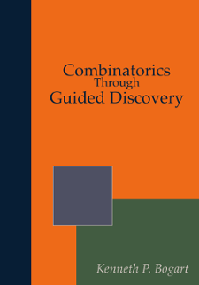

<!-- About/info -->
  <section class="section">
    <div class="container">
      <div class="columns">
        <div class="column is-3 has-text-centered">
          <div class="content">
          <p></p>
            <p>
              <a class="button is-info is-outlined" href="./ctgd/ctgd.html"><span class="icon is-small"><i class="fa fa-book"></i> </span><span>Read online</span></a>
            </p>
            <p >
              <a class="button is-info is-outlined" href="./pdf/ctgd.pdf"><span class="icon is-small"><i class="fa fa-download"></i></span><span>Download ebook</span></a>
            </p>
            <p >
              <a class="button is-info is-outlined" href="http://amzn.to/2CvXJbh"><span class="icon is-small"><i class="fa fa-shopping-cart"></i> </span> <span>Purchace paperback</span></a>
            </p>
        </div>
      </div>
        <div class="column">
          <div class="content">
          <p>
            At the time of his death in 2005, Ken Bogart was working on an NSF-supported effort to creat a combinatorics textbook that developed the key ideas of undergraduate combinatorics through "guided discover", or what many today typically call inquiry-based learning.  The project was under contract with Springer-Verlag for a commercially-published print edition, but Ken's untimely passing left the project in an unfinished state.
          </p>

          <p>
            This is a new release of <i>Combinatorics Through Guided Discovery</i> is an attempt to fulfill the Bogart family's wish to see the project grow and reach a complete state.  The content is nearly identical to the <a href="https://www.math.dartmouth.edu/news-resources/electronic/kpbogart/" target="_blank">2004 release</a>, save for a few typographical corrections.  The main addition here is the availability of an <a href="./ctgd/">interactive web version</a>.  There is also a new print edition and <a href="./pdf/bogart.pdf">pdf version</a>.  The conversion from LaTeX to PreTeXt, which included incorporating the online hints and bringing the source code up to date with the most recent PDF available, was completed by in 2017 by Mitchel T. Keller, Oscar Levin, and Kent E. Morrison.  The text, along with its <a href="https://github.com/OpenDiscreteMath/ibl-combinatorics" target="_black">PreTeXt source code</a>, are released under the <a href="http://www.gnu.org/copyleft/fdl.html" target="_blank">GNU Free Documentation Licence (FDL)</a>.
          </p>
          <h3>Description</h3>
          <p>
            This book is an introduction to combinatorial mathematics, also known as combinatorics. The book focuses especially but not exclusively on the part of combinatorics that mathematicians refer to as "counting." The book consist almost entirely of problems. Some of the problems are designed to lead you to think about a concept, others are designed to help you figure out a concept and state a theorem about it, while still others ask you to prove the theorem. Other problems give you a chance to use a theorem you have proved. From time to time there is a discussion that pulls together some of the things you have learned or introduces a new idea for you to work with. Many of the problems are designed to build up your intuition for how combinatorial mathematics works. Above all, this book is dedicated to the principle that doing mathematics is fun. As long as you know that some of the problems are going to require more than one attempt before you hit on the main idea, you can relax and enjoy your successes, knowing that as you work more and more problems and share more and more ideas, problems that seemed intractable at first become a source of satisfaction later on.
          </p>

          <p>
            There are six chapters as well as an appendix with three additional topics:
            <ol>
              <li> What is Combinatorics?</li>
              <li>Applications of Induction and Recursion in Combinatorics and Graphy Theory</li>
              <li>Distribution Problems</li>
              <li>Generating Functions</li>
              <li>The Principle of Inclusion and Exclusion</li>
              <li>Groups Acting on Sets</li>
            </ol>
            The three supplmental sections deal with relations, mathematical induction, and exponential generating functions.
            </p>

            <p>Many of problems have hints, which can be found in the back of the book (for the pdf and print versions) or linked directly from the problem (in the online version).</p>

            <h3>About the Author</h3>

            <p id="p-1">Kenneth Paul Bogart was born on October 6, 1943 in Cincinnati, OH. He graduated from Marietta College in Ohio in 1965, and earned his Ph.D. in mathematics from the California Institute of Technology in 1968. He married Ruth Tucker in 1966, and they moved to Hanover in 1968 where Ken was appointed an Assistant Professor of Mathematics. Ken remained in the job that he loved for 37 years
being promoted to Associate Professor in 1974, and to Full Professor in 1980.
Ken's career was characterized by a love of mathematics and scholarship, and a
passion for teaching and mentoring at all levels within the mathematics
curriculum. His passion for research is evidenced by over 60 journal articles
and nine textbooks in his field of combinatorics. Ken's research covered a wide
spectrum of topics within combinatorics.</p> <p id="p-2">Ken's mathematical
roots were in algebra and lattice theory, and his earliest papers developed
structural results for Noether lattices. One of the main topics in his research
was partial orders, about which he wrote more than two dozen papers. This line
of research started in the early 1970's with contributions to the theory of
dimension for partial orders. A number of his papers treated applications of
partial orders to the social sciences; for instance, he contributed to social
choice theory by examining the optimal way to develop a consensus based on
rankings that are partial orders. Interval orders and interval graphs played the
most prominent role in Ken's research; his papers in this field span roughly
thirty years, starting in the mid 1970's, and about half of his Ph.D. students
worked in this area. Among his contributions in this area are the introduction
and investigation of new concepts related to interval orders and graphs, the
development of new and simpler proofs of key results, and the exploration of a
number of structures that are natural variations or interesting special types of
interval orders and graphs. Ken also contributed to the theory of
error-correcting codes; in particular, he constructed a class of codes from
partial orders. He collaborated on several papers in matroid theory, to which he
contributed valuable insights from lattice theory and geometry.</p> <p
id="p-3">Throughout the later part of his career, Ken became increasing
interested in how students learn mathematics. His NSF-sponsored project of
"guided-discovery" in combinatorics is an element that lives on in the math
department. Ken also devoted a great deal of time to helping revise the teaching
seminar which is fundamental part of the mathematics graduate program at
Dartmouth.</p> <p id="p-4">For the past nine years, Ken and Ruth spent winters
in Santa Rosa, CA, where they loved to hike and mountain bike.</p> <p
id="p-5">This biography is excerpted from one written by T. R. Shemanske and <a
class="external-url"
href="https://math.dartmouth.edu/publicity/general/kpbogart-life.phtml"
target="_blank">posted</a> on the website of the Department of Mathematics of
Dartmouth College in April 2005. Shemanske wrote:</p> <blockquote
class="blockquote" id="blockquote-1"> <p id="p-6">I have borrowed freely from a
number of published sources (below), and am especially grateful to Professor Joe
Bonin for writing about Ken's research, Mary Pavone for her remarks about Ken's
involvement with WISP, and for a photo from Ruth Bogart.</p> <p id="p-7">Joe
Bonin, The George Washington University; Mary Pavone, Director Women in Science
Project; Press Democrat, Santa Rosa, CA (April 6, 2005); The Dartmouth, (April
4, 2005)</p> </blockquote> </div>

            <!-- <div class="level">
              <div class="level-item has-text-centered">
                <a class="button is-link" href="./ctgd/"><span class="icon is-small"><i class="fas fa-book"></i> </span><span>Read online</span></a>
              </div>
              <div class="level-item has-text-centered">
                <a class="button is-link" href="./pdf/bogart.pdf"><span class="icon is-small"><i class="fas fa-download"></i></span><span>Download ebook</span></a>
              </div>
              <div class="level-item has-text-centered">
                <a class="button is-link" href="http://amzn.to/2CvXJbh"><span class="icon is-small"><i class="fas fa-shopping-cart"></i> </span> <span>Purchace paperback</span></a>
              </div> -->
            </div>
          </div>
        </div>
      </div>
    </section>

    <!-- <section class="section">
      <div class="container">
        <div class="content">
          <p>
            As the title suggests, this book is designed for a “discovery method” course. The heart of the book is the hundreds of problems that guide the student through the key ideas of enumerative combainatorics and a brief introduction to graph theory. The problems are marked with special symbols to indicate their role in the course, for example, whether they are essential or motivational. The chapter titles are:
            <ol>
              <li> What is Combinatorics?</li>
              <li>Applications of Induction and Recursion in Combinatorics and Graphy Theory</li>
              <li>Distribution Problems</li>
              <li>Generating Functions</li>
              <li>The Principle of Inclusion and Exclusion</li>
              <li>Groups Acting on Sets</li>
            </ol>
            Three supplmental sections deal with relations, mathematical induction, and exponential generating functions.
            </p>

            <p>Many of problems have hints, which can be found in the back of the book (for the pdf and print versions) or linked directly from the problem (in the online version).</p>
          </div>

        </div>

  </section> -->

  <!-- CTA buttons: -->
  <!-- <section class="section">
    <div class="container">
      <div class="level">
        <div class="level-item has-text-centered">
          <a class="button is-link" href="./ctgd/">Read online</a>
        </div>
        <div class="level-item has-text-centered">
          <a class="button is-link" href="./pdf/bogart.pdf">Download ebook</a>
        </div>
        <div class="level-item has-text-centered">
          <a class="button is-link" href="http://amzn.to/2CvXJbh">Purchace paperback</a>
        </div>
      </div>
    </div>
  </section> -->
